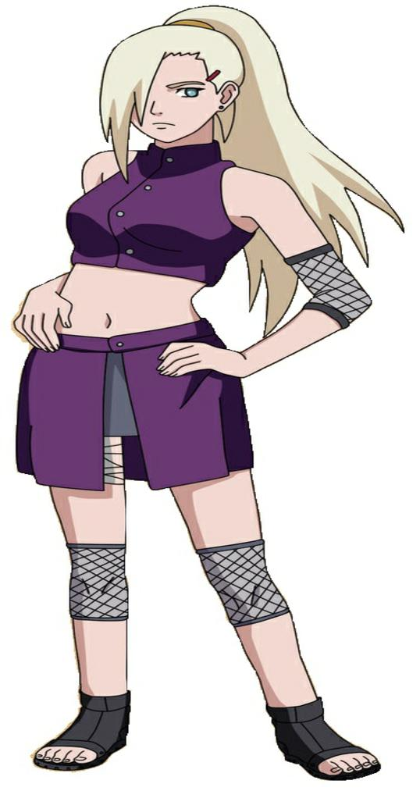

ino Yamanaka
É a única garota do Time 10 e habilidosa. Ela é uma amiga de infância de Sakura Haruno, que ajudo-a a desenvolver sua própria identidade. Quando ela descobriu que gostava de Sasuke Uchiha, Sakura terminou sua amizade para que elas pudessem competir adequadamente pelo seu afeto. As duas eventualmente fazem as pazes e reatam sua amizade, mas ainda mantém uma atitude competitiva . quando Sakura se torna técnica de cura, Ino também se interessa, na esperança de ser mais útil para seus companheiros de equipe como um ninja médica.
voltar a galeria de personagensCriadores
Lucas e Cristian
Contatos:

eliezerfernandesvss@hotmail.com
TELEFONE